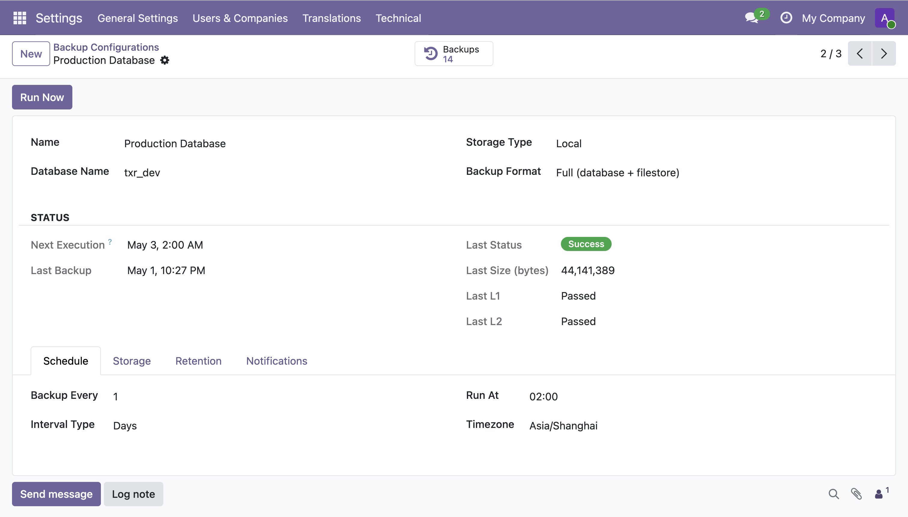
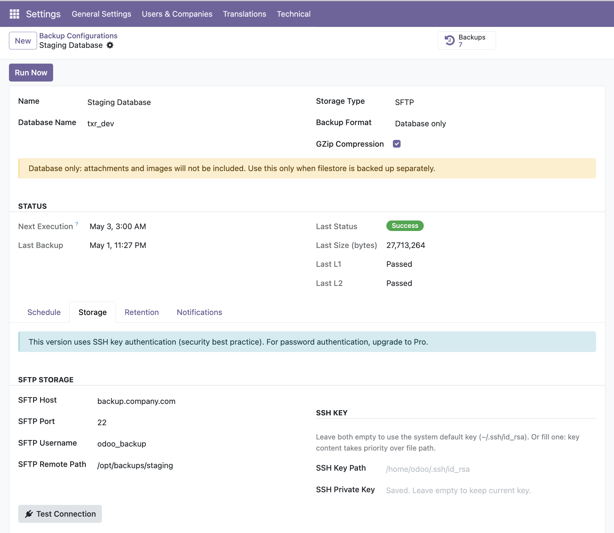
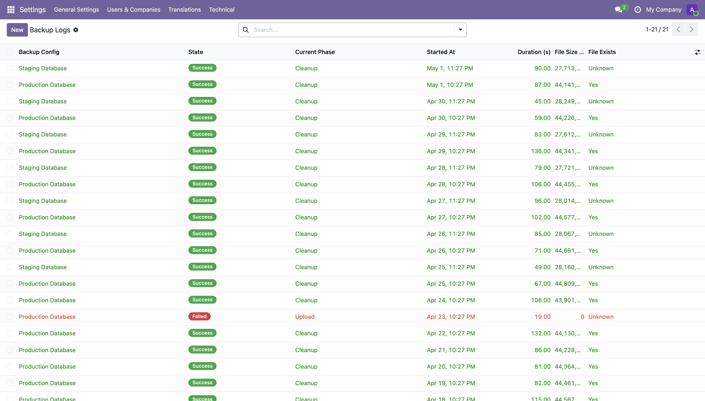

Zero-dependency database backup with built-in verification — supports Odoo 17, 18 & 19
Most Odoo backup modules either require extra Python packages or don't verify what they save. Texura DB Backup Lite uses only standard Odoo + system tools (pg_dump / sftp), and automatically verifies every backup with SHA-256 integrity checks and pg_restore structure validation.
No pip install required. Uses pg_dump and the OpenSSH sftp binary already on your server.
L1: SHA-256 file integrity check. L2: pg_restore structure scan — confirms the dump is actually restorable.
Configure backup frequency in hours, days, weeks, or months. Each config gets its own Odoo cron job.
Save backups locally or upload to any SSH server. Supports both key-file and inline private-key authentication.
Keep the last N backups or backups from the last N days. Retention only removes successful backups — errors are preserved for audit.
Get notified on failure (and optionally on success) with rich HTML emails sent to your chosen contacts.
Clean, native Odoo interface — no external dashboards, no new apps to learn.

Backup configuration — name, schedule, storage type, and live verification status (L1 / L2) on one screen

SFTP setup — enter host, port, path, and SSH key; hit Test Connection before saving
| Feature | Lite (Free) | Pro (Paid) |
|---|---|---|
| Local storage | ✓ | ✓ |
| SFTP storage | ✓ | ✓ |
| L1 SHA-256 verification | ✓ | ✓ |
| L2 pg_restore structure check | ✓ | ✓ |
| Flexible scheduling | ✓ | ✓ |
| Email notifications | ✓ | ✓ |
| Count & days retention | ✓ | ✓ |
| GZip compression | ✓ | ✓ |
| S3 / Google Cloud / Azure storage | — | ✓ |
| L3 full test-restore verification | — | ✓ |
| One-click restore from UI | — | ✓ |
| Backup encryption (AES-256-GCM) | — | ✓ |
Need cloud storage, full restore testing, or one-click restore from the Odoo UI?
Texura DB Backup Pro is under active development. Follow Texura on apps.odoo.com to be notified when it launches.
This module depends only on base and mail — both included in every Odoo installation. No extra modules required.
System requirements:
pg_dump — PostgreSQL client tools (usually already installed with Odoo)sftp — Only needed if using SFTP storage (install with apt install openssh-client)Once running, every execution is logged with its state, file size, and verification result:

Backup log — every run recorded with duration, file size, L1/L2 pass/fail, and file-existence check